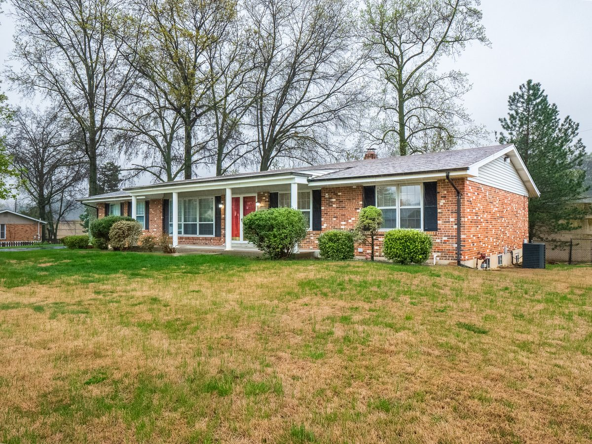
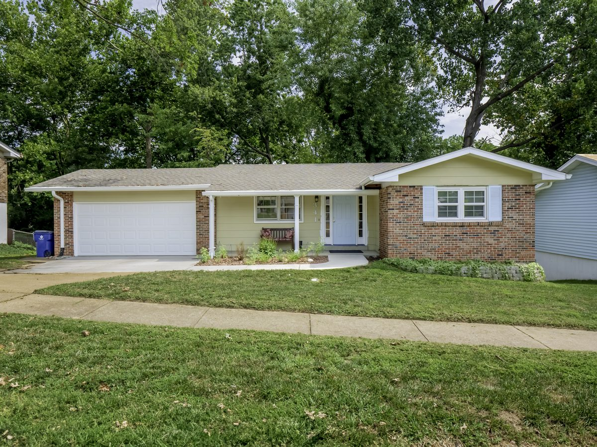

South County St. Louis.
9 communities. 6 ZIP codes. 5 school districts. The mistake is treating South County like one market. A $240K buyer and a $500K buyer are not shopping the same version of South County.

South County Home Buying Questions, Answered With 2026 Sales
Short answers first. Each one links to the detail further down the page or on the community’s own page.
What is South County in St. Louis?
South County isn’t a city or a ZIP code. It’s the common name for the communities in the southern part of St. Louis County. This guide covers nine: Oakville, Mehlville, Concord, Affton, Lemay, Sappington, Crestwood, Sunset Hills and Green Park, across six ZIP codes (63123 and 63125 through 63129) and five school districts. Fenton, Shrewsbury and five smaller towns are South County too and have their own page.
How much does a house cost in South County?
It depends heavily on the community. In 2026 closed sales, medians ran from $195,000 in Lemay to $729,050 in Sunset Hills. Six of the nine communities had medians between $273,000 (Affton) and $385,000 (Oakville).
What are the most affordable areas in South County?
By 2026 median sale price: Lemay ($195,000), Affton ($273,000) and Green Park ($286,500, a small sample of 10 sales). Expect older homes there, mostly built in the 1950s through the 1970s.
How fast do homes sell in South County?
Fast. Median days on market ran from 4.5 days (Concord, Sunset Hills and Green Park) to 8 days (Lemay) across the nine communities in 2026.
Can I buy a house in South County for $300,000?
Yes, but where you look matters. At $300,000 or less, a 2026 budget reached 44 of 47 sales in Lemay, 37 of 53 in Affton, 6 of 10 in Green Park and 59 of 148 in the Mehlville High area. It reached 24 of 137 in the Oakville High area, 14 of 56 in Concord, 9 of 40 in Crestwood, 5 of 30 in Sunset Hills and none of the 14 in Sappington.
What does $400,000 buy in South County?
At $400,000 or less, a 2026 budget reached every Lemay sale and most sales in Affton (46 of 53), Green Park (8 of 10), the Mehlville High area (112 of 148), Concord (38 of 56), Crestwood (26 of 40) and the Oakville High area (79 of 137). It reached 5 of 14 in Sappington and 6 of 30 in Sunset Hills.
Which South County communities have the most home sales?
The Mehlville High area (148 sales) and the Oakville High area (137) had the most 2026 sales on this site’s community pages, followed by Concord (56), Affton (53) and Lemay (47). Sappington (14) and Green Park (10) had the fewest. The areas are measured differently, so the counts shouldn’t be added together.
Do South County homes sell over asking price?
Usually. Measured against the original list price, more than half of 2026 sales closed above it in six of the nine communities, from 57.7% in the Oakville High area to 65.0% in Crestwood. Lemay (22 of 47), Green Park (4 of 10) and Sappington (5 of 14) were under half.
How old are most homes in South County?
Mostly mid-century. The median year built ran from 1950 in Lemay to 1979 in the Oakville High area. Affton (1954), Crestwood (1957) and Green Park (1958) were 1950s; Sappington (1963), the Mehlville High area (1966), Concord (1966) and Sunset Hills (1969) were 1960s.
How big is a typical South County house?
The median house in 2026 sales ran from 1,283 sq ft in Lemay to 3,018 sq ft in Sunset Hills. Most communities fell between 1,440 sq ft (Affton) and 1,874 sq ft (Green Park); the Oakville High area (about 2,290) and Sappington (2,458) ran larger.
Are most South County homes ranches?
In most communities, yes. Ranch-style homes were at least half of 2026 sales in six of the nine, led by Crestwood (29 of 40). The Oakville High area was just under half (68 of 137), and about one in three sales were ranches in Lemay (16 of 47) and Sunset Hills (10 of 30).
What ZIP codes are in South County?
Six ZIP codes cover the nine communities in this guide: 63123, 63125, 63126, 63127, 63128 and 63129. ZIP codes don’t match community or school district lines, so check the exact address.
Do buyers pay more for the same ranch in Lindbergh than in Mehlville R-IX?
It depends on the size. For 2026 ranch sales of 1,000–1,399 sq ft, the median was $234 a square foot in Lindbergh and $231 in Mehlville R-IX, nearly the same. For 1,400–1,799 sq ft ranches it was $216 in Lindbergh and $194 in Mehlville R-IX, about $35,000 on a 1,600-square-foot house. Affton 101 ($214 and $174) and Bayless ($204 and $172) were lower in both sizes.
Which school districts serve South County?
Five school districts had 2026 sales in these communities: Mehlville R-IX, Lindbergh, Affton, Hancock Place and Bayless. District lines don’t follow community names. Concord, Affton, Lemay and Green Park each had sales in more than one district, so verify the district for the exact address.
Is Webster Groves part of South County?
No. Webster Groves isn’t one of the South County communities, and it has its own page on this site.
Is Arnold part of South County?
No. Arnold is a separate city in Jefferson County, but people who live along South County’s I-55 corridor go there often. If Home Depot doesn’t have it, Lowe’s in Arnold is 12 to 15 minutes away.
Is Fenton part of South County?
Yes. Fenton has two sides: the St. Louis County side, with the incorporated City of Fenton, and a Jefferson County side, where homes aren’t in any city but still have a Fenton mailing address. Part of Fenton is in the Lindbergh School District; in 2026, 11 of the 13 sales inside city limits were Lindbergh.
Is Crestwood South County or West County?
South County. Crestwood is one of the nine communities in this guide, and 39 of its 40 sales in 2026 were in the Lindbergh School District.
What’s the difference between Oakville and Mehlville?
Both are in the Mehlville R-IX School District, so the first difference is the high school area: Oakville High or Mehlville High. After that, it’s location. Much of Oakville is deep South County, with the Meramec and the Mississippi rivers on two edges, and the quick-errand convenience South County is known for doesn’t describe those areas. In 2026 sales, Oakville High-area homes were newer, larger and pricier (median built 1979, about 2,290 sq ft, $385,000) than Mehlville High-area homes (1966, about 1,770 sq ft, $323,500).
What are the main roads in South County?
I-55 and I-255 are the interstates. The four main arteries are Lindbergh, Gravois, Tesson Ferry and Telegraph. Secondary roads that feed them include Sappington Road, Baptist Church Road, Eddie and Park Road, Forder Road, East Concord, Mattis Road and Baumgartner Road.
Where do people in South County shop?
Mostly along the main arteries. South County is anchored by big-box stores like Target and Walmart, with grocery stores, pharmacies and most of the restaurants along Lindbergh and Telegraph.
What is daily life like in South County?
Convenient. It’s well developed, errands are short drives from most of the area, and the road network gives you options when traffic backs up. The trade-off is rush-hour traffic on Telegraph and on I-270.
How Do the Nine South County Communities Compare?
One table with each community’s 2026 median sale price, number of sales, typical time on market and school district split. Click a name for that community’s full page.
| Community | Median price | Sales | Median days on market | School districts (2026 sales) | Sales counted |
|---|---|---|---|---|---|
| Lemay | $195,000 | 47 | 8 | Hancock Place 27, Mehlville R-IX 18, Bayless 2 | Census boundary |
| Affton | $273,000 | 53 | 5 | Affton 41, Mehlville R-IX 7, Bayless 4, Lindbergh 1 | Census boundary |
| Green Park | $286,500 | 10 | 4.5 | Lindbergh 5, Mehlville R-IX 5 | City limits |
| Mehlville | $323,500 | 148 | 6 | Mehlville R-IX | Mehlville High area |
| Concord | $352,500 | 56 | 4.5 | Lindbergh 39, Mehlville R-IX 17 | Census boundary |
| Crestwood | $365,000 | 40 | 6.5 | Lindbergh 39 of 40 | City limits |
| Oakville | $385,000 | 137 | 7 | Mehlville R-IX | Oakville High area |
| Sappington | $427,500 | 14 | 6.5 | Lindbergh | Census boundary |
| Sunset Hills | $729,050 | 30 | 4.5 | Lindbergh | City limits |
Each row repeats the figures published on that community’s page, which has the full breakdown. Days on market is cumulative (CDOM). Sappington and Green Park are small samples. The areas are measured differently (Census boundary, city limits or MLS high school area), so the sales counts aren’t meant to be added together.
What Did the Typical South County House Look Like in 2026?
| Community | Median year built | Median sq ft | Ranch-style | Sold above original list |
|---|---|---|---|---|
| Lemay | 1950 | 1,283 | 16 (34.0%) | 22 (46.8%) |
| Affton | 1954 | 1,440 | 30 (56.6%) | 33 (62.3%) |
| Green Park | 1958 | 1,874 | 6 (60.0%) | 4 (40.0%) |
| Mehlville | 1966 | 1,767 | 89 (60.1%) | 88 (59.5%) |
| Concord | 1966 | 1,801 | 28 (50.0%) | 34 (60.7%) |
| Crestwood | 1957 | 1,646 | 29 (72.5%) | 26 (65.0%) |
| Oakville | 1979 | 2,289 | 68 (49.6%) | 79 (57.7%) |
| Sappington | 1963 | 2,458 | 8 (57.1%) | 5 (35.7%) |
| Sunset Hills | 1969 | 3,018 | 10 (33.3%) | 18 (60.0%) |
Square footage is reported living area, rounded to the nearest foot. “Sold above original list” compares the sale price with the first asking price. Condition isn’t in MLS data.
You Can't Search "South County" on Zillow
South County is not a city. It's not a ZIP code. It's a geographic reference that covers nine distinct communities across six ZIP codes and five school districts. When buyers search "South County homes for sale," they're usually searching the wrong thing.
The price gap between Affton and Sunset Hills is over $400,000. The school district line between Affton and Concord decides whether you're in Affton 101 or Lindbergh. The ZIP code boundary between 63125 and 63127 is the difference between a $230K ranch in Lemay and a $700K-plus home in Sunset Hills. None of that shows up when you filter by "South County" on a real estate portal.
Where Does Your Budget Take You in South County?
South County breaks into three practical tiers. The starter tier gets you into an established owner-occupied community with older housing stock and deferred systems. The mid-tier adds newer construction, better school district pull, and less immediate maintenance. The upper tier is Lindbergh schools, larger lots, and a price point that most first-time buyers can't touch.
Lemay, Affton, Green Park
This is where first-time buyers land when the payment matters most. Expect ranches and split-levels built in the 1950s–1970s, tight lots, and systems that are on borrowed time. FHA and VA buyers are heavy here because the price works, but the condition tradeoffs are real. Federal Pacific panels, cast iron drains, galvanized supply lines, and negative grading are common. Budget $10K–$20K in deferred maintenance on top of the purchase price.
Mehlville, Concord, Crestwood, Oakville
This tier adds school district options and reduces immediate system risk. Lindbergh district overlap starts here. Housing stock is mixed — some 1980s construction, some updated 1960s ranches, some newer builds. Buyers here are balancing payment comfort with resale value and aren't willing to take on a full rehab project. Inspection issues still exist, but they're less catastrophic than the starter tier.
Sappington, Sunset Hills
This is not a starter home zone. The 2026 sales median was $427,500 inside Sappington (a small sample of 14 sales) and $729,050 inside Sunset Hills, where the median house was about 3,000 square feet. If you’re searching for a $230K ranch in Lemay, you’re not competing with these buyers.
Medians are 2026 closed single-family sales from each community page: inside the Census boundary for Affton, Concord, Lemay and Sappington; inside city limits for Crestwood, Green Park and Sunset Hills; by MLS high school for Mehlville and Oakville.
What Did $250K, $300K, $350K and $400K Reach in Each South County Community?
The tiers above use medians. This table answers the more practical question: of all the 2026 sales in each community, how many closed at or below your budget? A higher share means more chances to buy.
| Community | Sales | $250K or less | $300K or less | $350K or less | $400K or less |
|---|---|---|---|---|---|
| Lemay | 47 | 34 (72.3%) | 44 (93.6%) | 44 (93.6%) | 47 (100.0%) |
| Affton | 53 | 14 (26.4%) | 37 (69.8%) | 40 (75.5%) | 46 (86.8%) |
| Green Park | 10 | 0 (0.0%) | 6 (60.0%) | 7 (70.0%) | 8 (80.0%) |
| Mehlville | 148 | 32 (21.6%) | 59 (39.9%) | 90 (60.8%) | 112 (75.7%) |
| Concord | 56 | 4 (7.1%) | 14 (25.0%) | 28 (50.0%) | 38 (67.9%) |
| Crestwood | 40 | 3 (7.5%) | 9 (22.5%) | 18 (45.0%) | 26 (65.0%) |
| Oakville | 137 | 6 (4.4%) | 24 (17.5%) | 53 (38.7%) | 79 (57.7%) |
| Sappington | 14 | 0 (0.0%) | 0 (0.0%) | 0 (0.0%) | 5 (35.7%) |
| Sunset Hills | 30 | 3 (10.0%) | 5 (16.7%) | 6 (20.0%) | 6 (20.0%) |
Counts match each community’s own page. Mehlville and Oakville are counted by MLS high school area; the others by Census boundary or city limits. With 14 and 10 sales, read Sappington and Green Park as directional.
Which School Districts Serve South County?
South County crosses several school districts, and community names don’t line up with them. The 2026 sales on this site’s community pages show how mixed it is: Concord, Green Park, Affton and Lemay each had sales in more than one district. Verify the district for the exact address before you write an offer.
Most of Affton
The Affton School District is separate from Mehlville and Lindbergh, and it covers most of Affton but not all of it. Of the 53 sales inside the Affton community in 2026, 41 were in the Affton School District, 7 in Mehlville R-IX, 4 in Bayless and 1 in Lindbergh.
Sunset Hills, Sappington, Crestwood, Much of Concord
In 2026 sales, Lindbergh covered all 30 sales inside Sunset Hills, all 14 inside Sappington, 39 of 40 inside Crestwood, 39 of 56 inside Concord and 5 of 10 inside Green Park. If you want Lindbergh, verify the exact address; district lines don’t follow community names.
Mehlville, Oakville, Part of Concord, Lemay and Green Park
Mehlville R-IX is the largest district footprint in South County. In 2026, every sale inside the Mehlville and Oakville community boundaries was in Mehlville R-IX, along with 17 of 56 inside Concord, 18 of 47 inside Lemay, 7 of 53 inside Affton and 5 of 10 inside Green Park. Most of Lemay’s sales (27 of 47) were in the Hancock Place School District.
⚠ School district boundaries do not follow ZIP codes or neighborhood names. Two houses on the same street can be in different districts. Always verify the assigned schools by exact property address with the county, the district, or your agent before making any school-driven decisions.
Same Budget, Different District: How Many Chances Did Buyers Actually Get in 2026?
A $300,000 budget can technically work in Affton, Mehlville and Lindbergh.
That doesn't mean you'll have the same home search in all three.
I went back through 2026 South County sales and looked at a specific buyer: someone searching for a 3+ bedroom home priced at $309,999 or less in Affton, Mehlville or Lindbergh.
Then I looked at when those opportunities actually appeared.
For this analysis, a Buyer Opportunity is a home matching that filter that was listed during the month and later closed within the study period. These are not live inventory counts, and they aren't every home listed in the district. They're a way of looking backward and asking: How often did this particular kind of buyer actually get a shot?
| Month | Affton | Mehlville | Lindbergh |
|---|---|---|---|
| January | 0 | 6 | 0 |
| February | 1 | 4 | 3 |
| March | 5 | 13 | 4 |
| April | 6 | 4 | 5 |
| May | 2 | 10 | 2 |
| June | 1 | 15 | 2 |
| July | 3 | 10 | 3 |
| August | 1 | 4 | 4 |
“Buyer Opportunities” are homes matching this specific search that were listed during the month and later closed within the study cohort. These are not total listings or live inventory. A zero or blank month does not mean no qualifying homes existed or were listed. Each home is counted in the month it was listed, once it closes. September is not shown because many September listings were still pending when this data was pulled in early October, and August counts may still rise for the same reason.
Mehlville Gave This Buyer More Chances
The clearest difference was Mehlville.
Throughout much of 2026, qualifying Mehlville homes appeared with considerably more frequency than they did in Lindbergh or Affton.
Look at June: 15 Mehlville opportunities entered this study cohort compared with 2 in Lindbergh and 1 in Affton. In July, it was 10 in Mehlville compared with 3 in Lindbergh and 3 in Affton.
Lindbergh was different. Under the same 3-bedroom and $309,999-or-less filter, qualifying opportunities were frequently limited to only a handful of homes in a month.
Affton could also work at this budget, but its smaller market meant the number of opportunities could be thin outside the stronger spring period.
That's an important distinction if you're deciding where to search.
Being able to afford a district isn't the same as having something to buy there.
A buyer could have a reasonable budget for all three districts and still experience three very different searches.
More Options Doesn't Necessarily Mean an Easier Purchase
Mehlville having more opportunities shouldn't be confused with those homes sitting around unwanted.
Showing activity remained meaningful, and the Mehlville homes in this price band that sold frequently closed at or above their original asking prices.
So the lesson isn't:
“Look in Mehlville because there's less competition.”
It's closer to:
“Mehlville may give you more chances to compete.”
That's a meaningful difference.
If you're searching Lindbergh with the same budget, scarcity itself can become part of the problem. You may spend more time waiting for a house that fits before you even get to the question of whether you'll win it.
The Time of Year Changed the Search, Too
Spring generally produced a deeper pool of qualifying opportunities.
March through May produced noticeably more opportunities across these searches than the beginning of the year, particularly in Affton and Mehlville. Mehlville's opportunity count remained relatively deep into June and July before thinning later in the summer.
This analysis only tracks homes matching our specific filter that ultimately became part of the closed-sale study cohort.
It's useful as a pattern — not a live inventory report.
Start With More Than the Price Ceiling
If you're comparing South County school districts, I wouldn't stop at:
“Can I afford a house there?”
I'd also ask:
“How often does the kind of house I want actually become available at my budget?”
Those are two different questions.
The St. Louis County school district data guide looks at how much of each district's closed-sale market different budgets could reach during 2026. From there, you can go deeper into the individual Lindbergh, Mehlville and Affton guides.
And before making a decision based on a school district, verify the district for the exact property address. St. Louis County boundaries don't always follow the neighborhood, municipality or ZIP code the way you'd expect.
If you're trying to figure out which South County search actually fits your budget and the kind of house you want, you can ask me here. No ranking of districts — just a closer look at what your particular search would involve.
What ZIP Codes Are in South County?
ZIP codes do not equal neighborhoods. A single ZIP can cover multiple neighborhoods with different school districts and price tiers. Searching by ZIP code without understanding what's actually inside that ZIP is how buyers waste time touring homes in the wrong market.
If you're searching "63127 homes for sale," you're looking at Sunset Hills, where the 2026 sales median inside city limits was $729,050. If you want Lemay, you need 63125. If you want Affton, you need 63123. The ZIP code search box does not correct for this.
Where Do First-Time Buyers Land in South County?
The South County starter home zone is Affton, Lemay, and the lower end of Mehlville. This is where FHA and VA buyers are heavy, where ranches and split-levels dominate inventory, and where inspection reports run long. A $230K ranch in this zone will have older systems, deferred maintenance, and repair costs that show up after closing. That's not a defect — it's the price tier reality.
Older Housing Stock, Practical Tradeoffs
Homes in the starter tier are typically built between 1950 and 1980. You're looking at ranches, split-levels, and occasional bi-levels. Lots are tight. Basements are usually finished or partially finished. The systems are aging. Federal Pacific electrical panels, cast iron drain lines, galvanized supply pipes, slab foundations, and negative grading are common. HVAC systems are often 15+ years old. Roofs have 3–5 years of life left if you're lucky.
FHA and VA loans add condition requirements on top of the existing issues. Peeling paint, missing handrails, non-GFCI outlets near water, and roof condition can all block loan approval. If the seller refuses repairs, the deal dies. Budget an extra $10K–$20K in post-closing repairs even if the inspection comes back clean, because older homes reveal problems slowly.
Buyers who value location and payment discipline over turnkey condition. Buyers who understand that $230K in South County means deferred systems, not deferred dreams. Buyers who can handle a project list and aren't expecting perfection. Buyers comparing Affton against Lemay on monthly payment.
How South County’s Roads and Shopping Fit Together
If you live here, you’re spoiled. I’ll admit I’m a little biased: I live about 5 minutes from South County Center and everything Lindbergh has to offer.
The way I describe South County to buyers: it’s anchored by its big-box stores, Target and Walmart among them, and they sit on the same main roads that carry most of the traffic. Shopping, groceries and the interstate are rarely far apart.
I-55 and I-255 do the long-distance work. They meet in South County, which puts downtown, the Illinois side and the rest of the I-270 loop within easy reach from most of the area.
Day to day, it runs on four main roads: Lindbergh, Gravois, Tesson Ferry and Telegraph. Much of the shopping and dining sits along those four.
What I like most is the second layer of roads that feeds them: Sappington Road, Baptist Church Road, Eddie and Park Road, Forder Road, East Concord, Mattis Road and Baumgartner Road, to name most of them. That layer is why South County is easy to get around. If one road is backed up or there’s an accident, I can usually take another and not lose much time.
I-55 · I-255
Lindbergh · Gravois · Tesson Ferry · Telegraph
Sappington · Baptist Church · Eddie and Park · Forder · East Concord · Mattis · Baumgartner
How Long Is the Commute from South County?
South County sits below the city with three main commute corridors: I-55 north to downtown, Gravois surface route to South City, and 270 west to Clayton and the central corridor. Commute times vary by 15–20 minutes depending on which neighborhood you choose and where you work. The times below are typical drive-time estimates, not measured averages; your exact route, departure time and traffic will change them.
I-55 Corridor · 20–25 Minutes
Affton and Lemay have the shortest downtown commute via I-55 northbound. Morning rush (7–9 AM) adds 5–10 minutes. The route is straightforward and predictable. If you work downtown and want to stay in South County, Affton and Lemay are the most practical choices. Oakville and Mehlville add 5–7 minutes. Sunset Hills and Crestwood push closer to 30 minutes in traffic.
270 to 40/64 · 25–35 Minutes
Concord, Oakville, and Sunset Hills have better access to Clayton via 270 north to I-64. Crestwood and Sappington are close behind. Affton and Lemay require surface streets to reach 270, which adds 10 minutes. If you work in Clayton, the medical corridor, or the Central West End, the west side of South County (Concord, Crestwood, Sunset Hills) makes more sense than the east side (Affton, Lemay).
Gravois Route · 15–25 Minutes
Affton has direct Gravois access, which cuts through to South City faster than the highway. It's a surface route with lights and slower speeds, but it's shorter distance. Lemay can use Gravois or I-55. If you work in Tower Grove, The Hill, or near Soulard, Affton is the most direct South County option.
Winter driving matters in South County. Sunset Hills and Crestwood have more hills. Affton and Lemay are flatter. If you're sensitive to ice and snow commutes, the topography difference is real.
What Is Daily Life Like in South County?
Most of South County’s everyday life runs along two roads, Lindbergh and Telegraph. Between them are the grocery stores, big-box stores, pharmacies and most of the restaurants. From much of Concord, nearly all of it is about five minutes away.
The thing I’d tell any buyer: South County isn’t about prestige. It’s about convenience. It’s well developed, and the road network gives you options when one road backs up. That’s not true of Manchester Road in West County or Kirkwood Road in Kirkwood.
Traffic is predictable once you know it. Telegraph is busy, and at rush hour turning left to head south on Telegraph can feel nearly impossible. The east-west roads in Mehlville stay fairly easy even at rush hour. The slow spots are getting onto I-270 in the morning and getting off it heading south around 3 p.m.; getting off at Butler Hill Road instead can save 5 to 10 minutes.
Highway access is quick from most of the area. North of I-255 in Mehlville it’s often under 5 minutes, about 10 at rush hour from most of Mehlville, and about 7–8 minutes from Oakville to the I-55 / I-255 interchange. Bigger errands are short drives too. Arnold isn’t part of South County, but many of us who live along the I-55 corridor go there often. If Home Depot doesn’t have what I need, I’m at Lowe’s in Arnold in 12 to 15 minutes.
And if you’re a little flexible about the school district, almost anywhere in South County works, because it’s so well developed.
Complete Neighborhood Index
Run the Numbers Before You Tour
Want the Straight Version?
No generic pitch. Just a real conversation about which South County neighborhood actually fits your budget, your commute, and your tolerance for deferred maintenance. In 13 years and 250+ transactions, I’ve learned what $230K in Lemay looks like versus $280K in Concord versus $450K in Crestwood. If you want the blunt version of where you fit, call me.
Call George · 314.435.1087 Run Affordability First
Grew up in South St. Louis, lived in Dogtown for 6 years, now in South County. You'll find us at Wellspring on Lindbergh on Sundays. I'm not selling you a house — I'm showing you how to think about buying or selling a house.
Complete St. Louis Home Buyer Guide
From pre-approval to closing day — see the complete buying process with all resources organized by stage.
📚 View Complete Guide